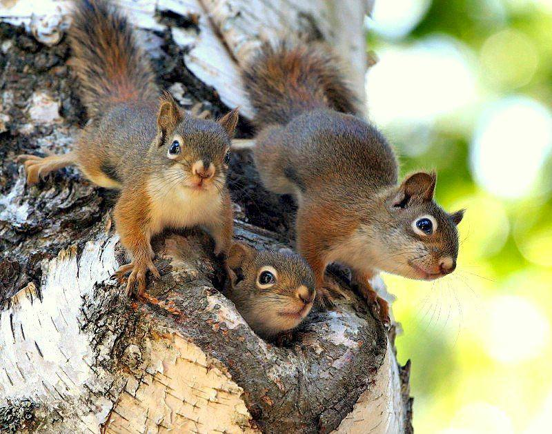

Москвач • Новости Москвы
@moscowach
Москвач • Новости Москвы
@moscowach
Бельчатопад начался в подмосковных лесах маленькие белочки выпадают из гнёзд с большой высоты.

🐿 «Бельчатопад» начался в подмосковных лесах — маленькие белочки выпадают из гнёзд с большой высоты.
Жителей просят не трогать малышей: лучше отойти подальше и спрятаться за дерево. В большинстве случаев мама-белка сама заберёт бельчонка и вернёт его в гнездо.
Жителей просят не трогать малышей: лучше отойти подальше и спрятаться за дерево. В большинстве случаев мама-белка сама заберёт бельчонка и вернёт его в гнездо.